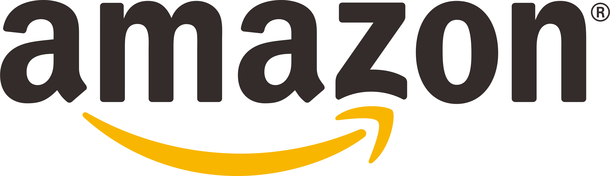

Bhinneka
Bhinneka adalah salah satu perusahaan e-commerce terkemuka di Indonesia. Bhinneka adalah platform perdagangan online yang menyediakan berbagai macam produk elektronik, komputer, perangkat keras dan lunak, peralatan kantor, peralatan rumah tangga, peralatan olahraga, produk kecantikan, fashion, dan banyak lagi.
Bhinneka didirikan pada tahun 1993 dan telah menjadi salah satu toko online terbesar di Indonesia. Mereka memiliki reputasi yang baik dalam menyediakan produk-produk berkualitas dari berbagai merek terkemuka. Selain itu, Bhinneka juga dikenal karena layanan pelanggan yang baik dan pengiriman yang cepat.
Bhinneka memiliki misi untuk menjadi penyedia solusi teknologi dan gaya hidup terkemuka di Indonesia dengan memberikan layanan terbaik dan produk berkualitas kepada pelanggan. Toko ini memungkinkan pelanggan untuk berbelanja secara online dengan mudah dan nyaman melalui situs web mereka.
Kunjungi Bhinneka

Amazon
Toko Amazon adalah salah satu perusahaan e-commerce terbesar dan terkemuka di dunia. Didirikan pada tahun 1994 oleh Jeff Bezos, Amazon awalnya dimulai sebagai toko online buku dan berkembang pesat menjadi platform perdagangan online yang menawarkan berbagai jenis produk, mulai dari elektronik, perangkat keras, perangkat lunak, pakaian, makanan, peralatan rumah tangga, hingga barang-barang kebutuhan sehari-hari.
Amazon dikenal dengan model bisnisnya yang mengutamakan kemudahan dan kenyamanan belanja bagi konsumennya. Mereka menawarkan berbagai opsi pengiriman cepat, termasuk Amazon Prime yang memberikan keanggotaan dengan berbagai manfaat, seperti pengiriman gratis dalam waktu satu atau dua hari, akses ke layanan streaming video, dan lainnya.
Selain sebagai platform perdagangan, Amazon juga mengembangkan dan menjual berbagai produk dan layanan inovatif, seperti perangkat keras seperti Kindle (pembaca e-book), perangkat pintar seperti Echo (asisten suara), layanan cloud computing (Amazon Web Services), dan masih banyak lagi.
Amazon memiliki reputasi yang baik untuk layanan pelanggan, keandalan pengiriman, dan beragamnya produk yang tersedia di platform mereka. Perusahaan ini memiliki visi untuk menjadi "tokonya dunia," yang mencakup memberikan akses luas kepada konsumen terhadap berbagai produk dan layanan melalui platform online mereka.
Kunjungi Amazon